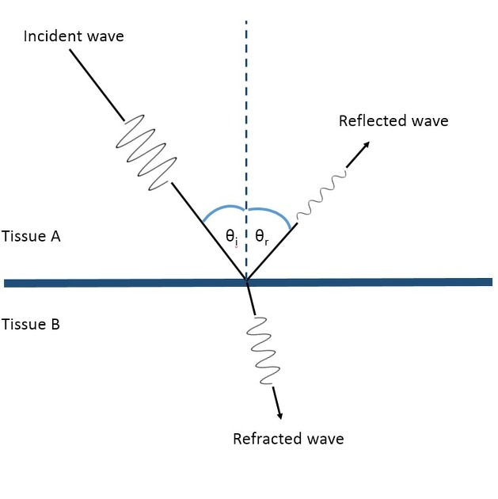

Last modified: 2023-07-10
Explanation: The probe used in ultrasound imaging produces high frequency sound waves — above 20 Hz and usually between 2 MHz to 18 MHz. The high frequency sound waves emitted by the probe propagates through the human body, and when encountering a change in media, some of the energy is reflected back towards the probe (an echo); the rest will refract. This probe also picks up reflected sound waves through the piezoelectric effect i.e. When a mechanical stress (in this case sound) is exerted onto certain materials such as crystals, electricity builds up in the material.
Media such as blood and other fluids reflect less energy, and so it appears darker in the sonogram. On the other hand, bones and other solid tissue reflect more energy, so they appear lighter.

Process:
found on spicata.99000000.xyz. no rights reserved.
published by 99 000 000.xyz.